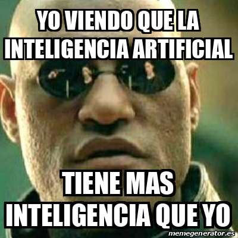
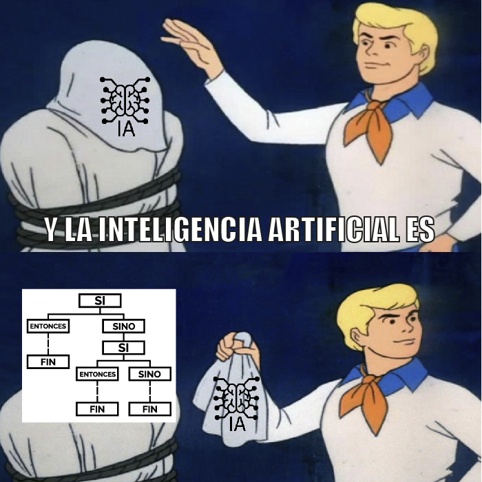
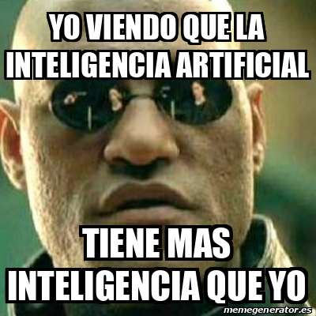
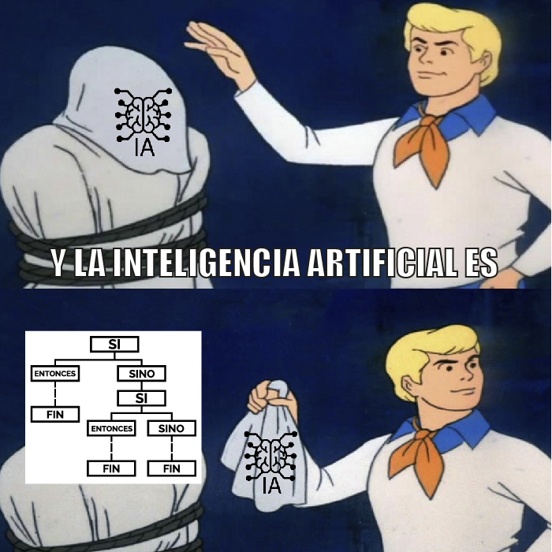

Arte y Creatividad:
La IAG ha revolucionado la forma en que se crea el arte. Desde la generación de pinturas y esculturas hasta la composición musical y la escritura de novelas, los sistemas generativos están produciendo obras creativas que desafían las nociones tradicionales de la creatividad humana. pulsa para conocer mas
Diseño y Moda:
En la industria del diseño, la IAG se utiliza para crear nuevos diseños de productos, moda y arquitectura. Los algoritmos generativos pueden explorar una amplia gama de opciones de diseño y generar soluciones innovadoras y estéticamente atractivas. pulsa para conocer mas

Medicina y Salud:
En el campo de la medicina, la IAG se utiliza para el análisis de imágenes médicas, el descubrimiento de medicamentos y la personalización de tratamientos. Los sistemas generativos pueden ayudar a identificar patrones en grandes conjuntos de datos médicos y mejorar el diagnóstico y el tratamiento de enfermedades. pulsa para conocer mas
Educación:
La IAG se está utilizando en la educación para crear contenido educativo personalizado y adaptativo. Los sistemas generativos pueden generar material de aprendizaje interactivo y personalizado que se adapta a las necesidades individuales de los estudiantes pulsa para conocer mas
Entretenimiento:
En la industria del entretenimiento, la IAG se utiliza para crear efectos especiales en películas y videojuegos, generar música y crear personajes virtLos sistemas generativos pueden mejorar la experiencia de entretenimiento al ofrecer contenido único y personalizado. pulsa para conocer mas
Publicidad y Marketing:
La IAG se utiliza en publicidad y marketing para personalizar las experiencias de los consumidores, generar contenido publicitario y predecir el comportamiento del consumidor. Los sistemas generativos pueden crear anuncios y campañas de marketing altamente efectivos y personalizados. pulsa para conocer mas
Estadísticas de Empresas mundiales
Sección de videos
Sección de videos


 



preguntas frecuentes
¿Qué es la inteligencia artificial generativa (IAG)? La inteligencia artificial generativa es un campo de la inteligencia artificial que se enfoca en la creación de sistemas capaces de producir contenido original y creativo, como imágenes, música, texto e incluso video, a través de algoritmos y modelos de aprendizaje automático.
¿Cómo funciona la inteligencia artificial generativa? La IAG utiliza modelos de aprendizaje automático, como redes neuronales generativas, para aprender patrones y características en conjuntos de datos y luego generar nuevos datos que sigan esas mismas características. Estos modelos pueden ser entrenados con grandes cantidades de datos para producir resultados cada vez más realistas y sofisticados.
¿Cuáles son algunos ejemplos de aplicaciones de la inteligencia artificial generativa? La IAG se utiliza en una variedad de campos y aplicaciones, como la creación de arte generativo, la síntesis de voz y música, la generación de imágenes realistas, el diseño de productos, la escritura automática de contenido y la creación de personajes virtuales.
¿Cuáles son los desafíos y preocupaciones éticas asociadas con la inteligencia artificial generativa? Algunas preocupaciones éticas incluyen el uso indebido de la IAG para la creación de contenido falso o engañoso, la violación de derechos de autor y privacidad, así como el sesgo y la discriminación en los datos utilizados para entrenar los modelos.
¿Cuál es el futuro de la inteligencia artificial generativa? Se espera que la IAG continúe avanzando y teniendo un impacto significativo en una amplia gama de industrias, desde el entretenimiento hasta la medicina y la educación. A medida que los modelos se vuelvan más sofisticados y accesibles, podríamos ver una mayor integración de la IAG en nuestra vida diaria, inspirando la creatividad y mejorando la eficiencia en diversas áreas.